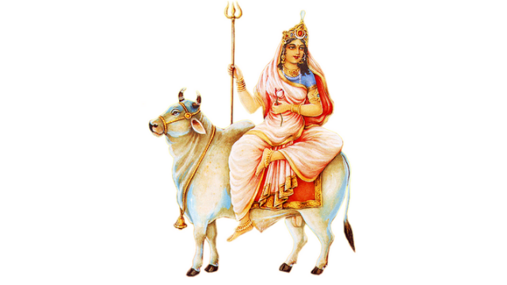

Durga Puja
Day 1

Shailaputri is a manifestation of the Hindu goddess, Durga and is one of the first Navadurga's venerated during the first day of Navratri.
She is also known as Sati, Bhavani, Parvati or Hemavati. Mother Shailaputri is the absolute form of Mother Nature or Gramma devata.
Goddess Shailaputri is depicted with two hands and has a crescent moon on her forehead. She holds a trident in her right hand and a
lotus flower in the left. She rides on mount Nandi (bull).
Weapon: Trident and lotus
Consort: Shiva
Mount: Bull / Ox (Vrishabha)
Abode: Kailash